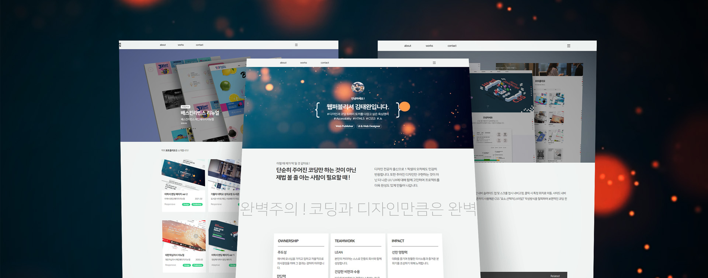

- 이력서 랜딩페이지 Ver 2
기존의 이력서 랜딩페이지 사이트를 반응형으로 리뉴얼한 사이트입니다. BEM CSS방법론을 적용하여 보다 간결한 캐스캐이딩과 유지관리의 용이성을 높였습니다. SVG를 사용하여 페이지의 생동감을 더했으며, 다크모드를 도입하여 눈의 피로를 줄였습니다.
| Category | Source | Related keywords |
|---|---|---|
| html | index.html works.html contact.html pf1.html pf2.html pf3.html pf4.html pf5.html pf6.html pf7.html pf8.html pf9.html | html5 |
| css | common.css mobile_main.css mobile_sub.css pc-tablet_main.css pc-tablet_sub.css swiper.min.css | css3 |
| js | TweenMax.min.js about.js footable.min.js html5shiv.js main.js swiper.min.js works.js | jquery |